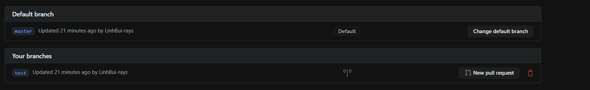
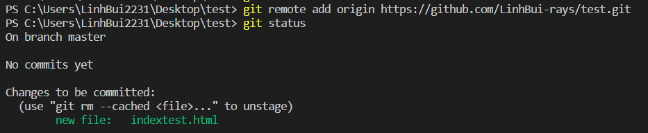

Branching
Branching is a more advanced command to create a professional project. For example, if there is a complicated function that needs a lot of adjustments,
developers should create a separated branch. This branch is not included in the source code and can only be added to the source code once all the functions are working nicely.
To create a branch, you enter [git branch “branch name”] in the terminal. Branch can be added to the source code by the merge command [git merge “branch that you want to merge"].
To access a branch, we use the checkout command [git checkout "branch name"]


Other commands
Branch can be added to the source code by the merge command [git merge "branch that you want to merge"].
However, in real life working, there will always be one member that is responsible for the whole project
and manage the source code, so instead of merging the branch directly, users should use a command called pulled request. This will allow the project manager to check
the code and add comments to team members before merging the branch into the source code.



One command that is also used commonly is [git status]. Users simply use this command to check the status of a file (whether it is added, committed) so they can perform the suitable tasks.
